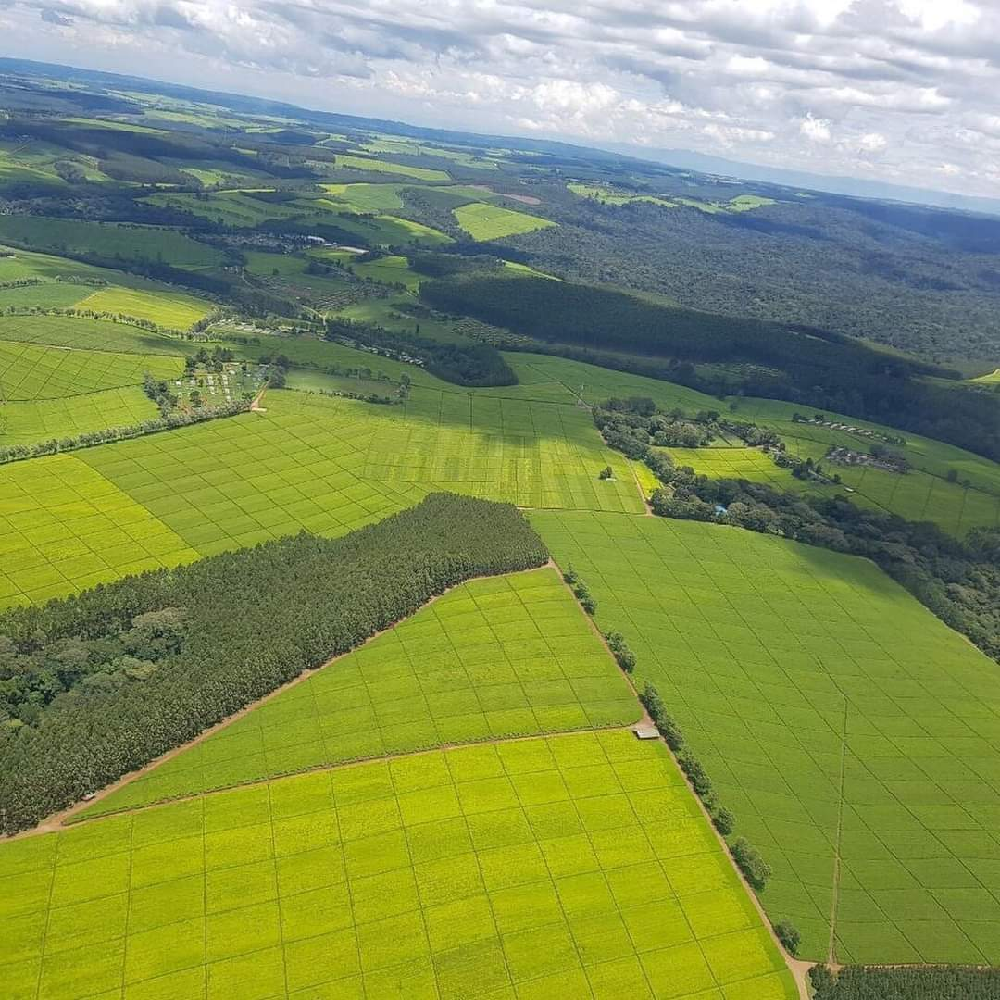
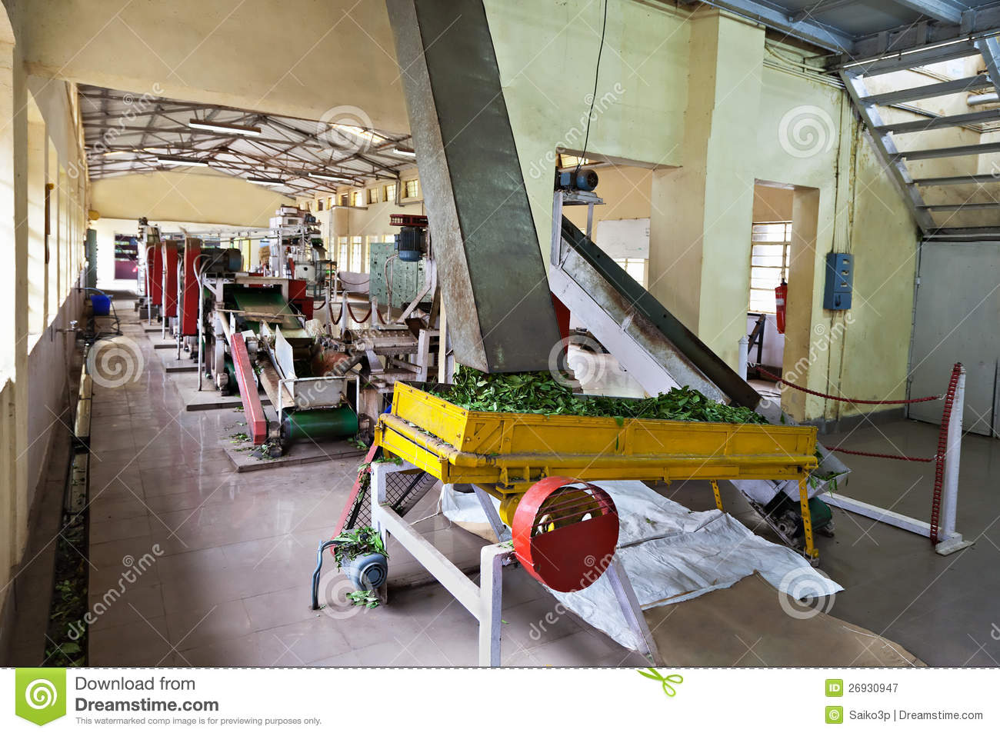

About-Maner Tea Factory ltd
MANER TEA
FACTORY LIMITED
TEA
FACTORY LIMITED"The Finest Tea On Earth, Produced Responsibly.
Who are we?
We are a company incorporated in kenya with an objective of conducting agribussiness in the tea sector.In its maiden flagship project, the company has established maner factory in chemaner, Bomet county to process orthodox speciality and CTC Teas.

vision
vision
To be leading manufacturer and marketer of quality teas in Africa produced through responsible and sustainable environment.

Our Approach
We collaborate with all stakeholders to employ best practices in tea husbandry, processing and marketing of teas from Bomet and Narok counties while maintaining consciousness to the social and environmental responsibilities to ensure business sustainability

Our process
(Crush,Tear, and Curl orCut, Tear and Curl) is a method of processing black tea in which tea leaves are passed through a series of cylindrical rollers with serrated blades that crush, tear, and curl the tea in small ,even-shapped pellets.
ADDRESS
Vinodeep towers,Baricho road
Nairobi kenya
Email:contact@greenfieldstea.co.ke
Phone no:0726873736